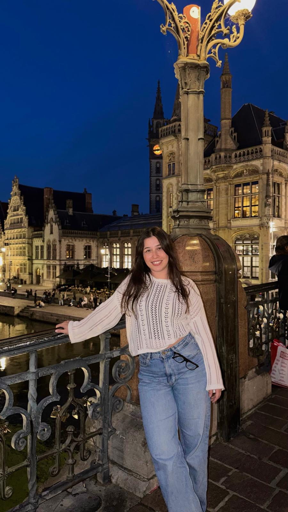

A LITTLE ABOUT ME
Hi, I'm Arife Nur Çakır.
Welcome to my little corner of the world.
I'm a Geomatics Engineering student at Hacettepe University. I enjoy discovering new places, exploring different cultures, and seeing the world from different perspectives.
This website brings together the places I've visited, the places that are special to me, and the destinations I hope to explore.
Every place has its own character, memories,
and stories to discover.